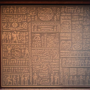

The mural itself is breathtakingly beautiful; colors still vibrant despite their age. But what catches your attention immediately are not just the images themselves but also the series of symbols scattered throughout them. They appear to form some sort of pattern or code, yet none of these resemble any known language. Realizing this could potentially hold answers about the history of this mysterious island, you pull out your sketchbook and begin meticulously drawing every symbol, trying to capture as much detail as possible.
